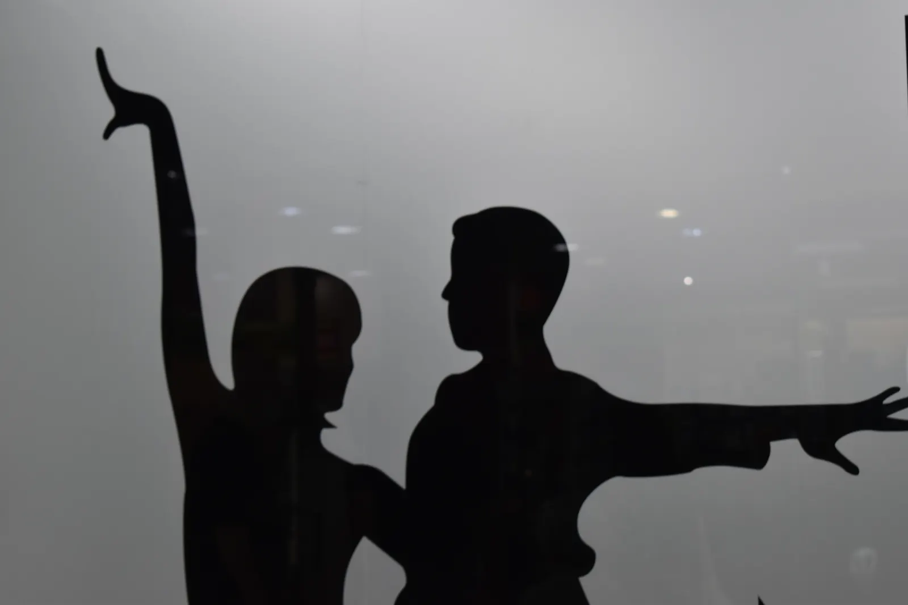

Belleza y bienestar
Servicios pensados para cuidarte y complementar tu rutina.
En Siete Notas también ofrecemos servicios complementarios para cuidar, celebrar y crear: belleza y bienestar, alquiler de salas y eventos.
Belleza, bienestar y espacios para compartir la magia de Siete Notas más allá de la danza y la música.
Belleza y bienestar
Alquiler de salas
Eventos y celebraciones
Siete Notas es mucho más que una escuela de danza y música. Nuestro centro en Leganés está pensado para acoger diferentes actividades, servicios y experiencias en un entorno cuidado, flexible y cercano.
Puedes contactar con nosotros para consultar disponibilidad de salas, propuestas de eventos, celebraciones o servicios vinculados al bienestar. Te orientamos según lo que necesitas y buscamos la opción más adecuada.
Servicios pensados para cuidarte y complementar tu rutina.
Salas disponibles para clases, ensayos o talleres.
Organización y espacios para eventos y celebraciones.
Esta landing page amplía la información para que cada visitante pueda entender mejor la actividad antes de contactar. Incluye objetivos, funcionamiento, ambiente de clase, beneficios y datos útiles para decidir si encaja con lo que está buscando.
Además, el contenido está redactado para mejorar el posicionamiento local en búsquedas de eventos y otros servicios en Leganés y para que los asistentes de IA puedan interpretar con claridad qué ofrece Siete Notas.

Espacios para ensayos, clases, talleres, reuniones o proyectos puntuales.
Opciones para cumpleaños, actividades especiales y encuentros creativos.
Propuestas complementarias para familias, alumnos y grupos externos.
Centro accesible en C. Torrubia, 4, con atención directa para resolver dudas.
Las clases combinan explicación, práctica, corrección y acompañamiento. La idea es que cada persona se sienta cómoda, pueda preguntar y avance con una estructura clara.
Indica fecha, número de personas y tipo de actividad.
Revisamos sala, horario y necesidades técnicas.
Ajustamos formato, duración y condiciones.
Te acompañamos para que la experiencia salga bien.
Puedes consultar disponibilidad, tarifas y condiciones según el tipo de uso y horario.
Sí, se pueden estudiar propuestas relacionadas con música, danza, talleres o celebraciones.
Fecha, horario, número aproximado de personas, actividad prevista y necesidades de espacio.
Si buscas alquiler de salas en Leganés, eventos, bienestar, salas para ensayo, clases y proyectos externos. en Leganés, en Siete Notas te orientamos según edad, nivel, objetivos y disponibilidad.
Solicitar informaciónEsta página se ha ampliado para que los buscadores y asistentes de IA puedan entender mejor qué ofrece Siete Notas: ubicación, tipo de actividad, público recomendado, horarios orientativos y servicios relacionados. Nuestro objetivo es que cualquier persona que busque alquiler de salas en Leganés, eventos, bienestar, salas para ensayo, clases y proyectos externos. encuentre una respuesta clara, local y útil.
Te orientamos según edad, experiencia previa, disponibilidad horaria y objetivo personal.
Sí. Muchas actividades cuentan con niveles de iniciación y grupos adaptados.